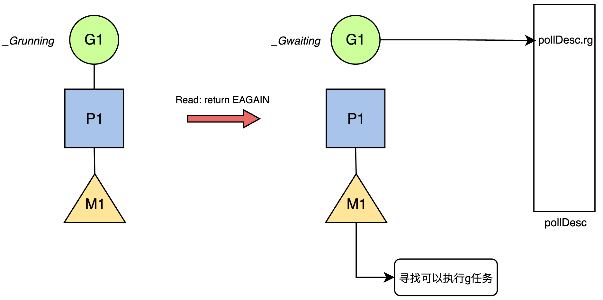

📄 本文共 1889 字，预计阅读 5 分钟
11. 网络模型--同GMP模型协作
1. 背景
在 Go Runtime 层面，网络 I/O 模型实现了“用户态同步，内核态异步”的抽象。当 Goroutine 执行 conn.Read() 阻塞时，该阻塞仅作用于 Goroutine 逻辑层面（逻辑挂起），而非操作系统线程（物理阻塞）。整个 I/O 生命周期由 Runtime 的 Netpoller 接管，形成了由 Park（挂起） 与 Ready（唤醒） 构成的闭环状态流转机制。
2. 第一阶段：挂起流程
当用户代码发起读操作（如 conn.Read）且内核 Socket 接收缓冲区为空时，Runtime 将触发非阻塞 I/O 流程，通过状态流转避免 M（系统线程）陷入阻塞 。图1描述了发生read操作时，g和m的状态。

图1: read操作下的g和m
{kind=link}
2.1 非阻塞系统调用与状态检测
Runtime首先尝试直接发起非阻塞系统调用（syscall.Read）：
- 数据就绪：若返回值 \(n > 0\)，则直接完成内存拷贝并返回，此时无调度开销。
- 数据未就绪：若内核返回
EAGAIN，表明缓冲区不可读，进入挂起阶段。
2.2 事件订阅
进入挂起流程后，Runtime定位到该文件描述符（FD）关联的 pollDesc 结构体。系统将当前 Goroutine 的内存地址（gp）原子写入 pollDesc.rg 字段。这一步建立了底层 I/O 事件与上层执行体的直接映射关系。
2.3 上下文切换与线程复用
随后，Goroutine 调用 gopark 函数执行核心挂起操作：
- 状态流转：Goroutine 状态由
_Grunning变更为_Gwaiting。 - 解绑 M：进入
_Gwaiting状态后，主动让出执行权，解除与当前M的绑定。 - 调度复用：M 线程并不进入休眠状态，而是立即进入调度循环，尝试从当前处理器（P）的本地队列获取下一个可运行的 G；若本地队列为空，则从全局队列获取或从其他 P 执行任务窃取。
此机制保证了OS线程的高饱和度运行，CPU资源保持高利用率，将I/O等待成本转化为 Goroutine 上下文切换成本。
3. 第二阶段：唤醒流程
当物理网卡接收到数据包并触发硬中断后，内核协议栈处理流程会将对应 Socket 的文件描述符（FD）加入到 Epoll 的就绪列表中。Runtime 通过 Netpoller 机制（epoll_wait）感知该事件，并执行以下关键步骤将挂起的 Goroutine 恢复至可运行状态。
- 当 M 线程从
epoll_wait获取就绪事件时，事件数据（epoll_data）中已包含注册阶段存入的pollDesc结构体指针。Runtime 直接通过该指针访问内存中的pollDesc结构体，完全绕过了基于 FD 的哈希查找，实现了 O(1) 的高效访问。 - M 通过访问
pollDesc.rg字段获取目标 Goroutine (G1)，并执行严格的原子操作以确保并发安全。原子操作将pollDesc.rg置空，防止多线程重复唤醒，标记该事件已被处理。通过 CAS (Compare-And-Swap) 操作将 G1 的状态从_Gwaiting变更为_Grunnable，完成逻辑唤醒。 - G1 被唤醒后，优先尝试将 G1 放入当前 P 的本地队列，减少全局锁竞争并复用热缓存。仅在本地队列满载时，才将 G1 注入全局队列等待调度，这也是利用CPU亲缘性策略的体现。
具体唤醒流程如图2所示。
 图2: 网络数据就绪g的唤醒示意
图2: 网络数据就绪g的唤醒示意
4. 超时控制与 Deadline 机制
Go 的网络 I/O 除了依赖 netpoller 等待 fd 就绪外，还必须解决一个工程问题：等待不能无限期阻塞。因此 net.Conn 提供了 Deadline 能力，用于将“可能永不返回的 I/O 等待”变成“有界等待”，保证 goroutine 可以按预期退出，从而提升系统的可控性与稳定性。
net.Conn 提供三类接口：
SetReadDeadline(t time.Time)：控制Read的最长等待时间SetWriteDeadline(t time.Time)：控制Write的最长等待时间SetDeadline(t time.Time)：同时设置读写 deadline
一旦设置deadline，网络i/o的阻塞条件就不再只是等待fd就绪了。
4.1 Deadline 与 netpoller 协作
当用户调用 SetDeadline 时，Runtime 不仅设置了时间阈值，更建立了时间事件与网络轮询描述符（pollDesc）的直接关联：
- 结构体扩展：
pollDesc结构体内部维护了一个timer字段。当 Deadline 被设定时，该 timer 被激活并注册到 Runtime 的计时系统中。 - 回调绑定：该 timer 的回调函数被指定为
netpollDeadline。这意味着一旦超时发生，Runtime 将直接触发针对该网络连接的特定处理逻辑，而非通用的定时任务。
4.2 异步中断与状态流转
超时机制的核心在于打破 epoll_wait 的被动等待。当 Deadline 到达而 I/O 事件仍未发生时，Runtime 会通过以下步骤实现对 Goroutine 的强制唤醒：
- 执行回调：计时器系统触发
netpollDeadline，进而调用核心函数netpollUnblock。 -
原子状态干预 (CAS)：
- Runtime 不等待内核的 Epoll 事件，而是直接对
pollDesc的状态机（rg/wg）发起原子操作。 - CAS 操作：检查目标 Goroutine 是否仍处于
_Gwaiting状态（即阻塞在 I/O 上）。如果是，则将其状态强制修改为_Grunnable。 - 逻辑等价性：在调度器视角下，这种由超时触发的状态变更，与网卡收到数据触发的变更完全一致。Goroutine 随即被加入运行队列。
- Runtime 不等待内核的 Epoll 事件，而是直接对
Goroutine 被调度器选中并恢复执行后，需要区分是被数据唤醒还是超时唤醒，这决定了后续的业务逻辑：
- 状态检查：在再次尝试执行系统调用（如
syscall.Read）之前，Goroutine 会首先检查pollDesc的内部状态。 - 错误返回：若检测到
pollDesc标记了超时位（或序列号过期），Runtime 将直接拦截底层的系统调用，不再向内核发起 IO 请求，而是立即向用户层返回context.DeadlineExceeded或i/o timeout错误。
4.3 应用层中的超时实践
理解底层的 pollDesc 状态机干预后，我们需要明确上层应用（如 net/http）的配置是如何透传至底层的。无论是客户端还是服务端，其超时配置本质上都是对底层 FD SetDeadline 的封装。
-
客户端超时：
- 全链路控制 (
http.Client.Timeout)：该配置覆盖了建连、TLS 握手、请求发送及响应读取的全生命周期。net/http内部会计算绝对截止时间，并多次调用底层的conn.SetDeadline，确保每个阶段均受 Runtime 计时器监控。 - 上下文控制 (
Context)：使用NewRequestWithContext设置的超时，其底层机制与Client.Timeout同源。若两者同时存在，Transport 层将选取较早的时间点作为最终 Deadline 注册到pollDesc中。
- 全链路控制 (
-
服务端超时：
http.Server提供了细粒度的超时参数。ReadTimeout对应 Accept 后至请求头/体读取完毕的阶段；WriteTimeout对应处理逻辑至响应写入完毕的阶段；IdleTimeout则对应 Keep-Alive 连接的空闲保活阶段。这些参数在连接生命周期的不同切片点，分别触发底层的conn.SetReadDeadline或conn.SetWriteDeadline。
所以在默认的 http.Client 和 http.Server 超时配置均为零值（无超时）。这意味着底层的 pollDesc 不会注册任何 Timer。若发生物理链路中断且对端未发送 RST/FIN 包，Goroutine 将永久停留在 _Gwaiting 状态，导致严重的 Goroutine 泄漏。因此，在生产环境中显式设置Deadline是保障系统健壮性的必要手段。